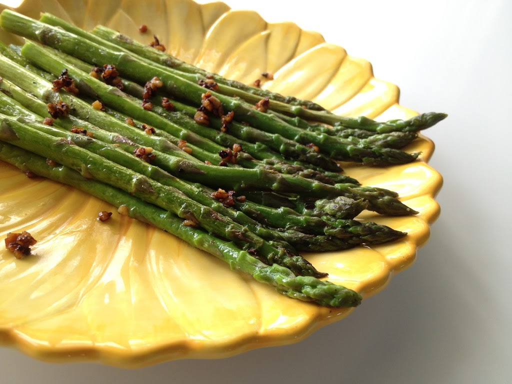

This is my favorite recipe for stir fried asparagus. I hope you like it. Blah blah blah blah. This is my favorite recipe for stir fried asparagus. I hope you like it. Blah blah blah blah. This is my favorite recipe for stir fried asparagus. I hope you like it. Blah blah blah blah. This is my favorite recipe for stir fried asparagus. I hope you like it. Blah blah blah blah. This is my favorite recipe for stir fried asparagus. I hope you like it. Blah blah blah blah.
